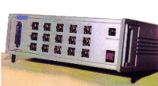
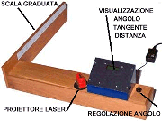

Chi siamo

PTE ELETTRONICA ha operato dal 1979 al 2009 nel campo della
progettazione e realizzazione di sistemi per l'acquisizione e
l'elaborazione di dati scientifici.
Questa esperienza e' ora disponibile per consulenze personali relative
alla realizzazione di apparecchiature dedicate ed alla
gestione della relativa documentazione tecnica.
Didattica
Abaco

L'abaco in figura consente di apprenderne rapidamente
l'impiego in quanto dispone di un visualizzatore numerico che
evidenzia il numero decimale corrispomdente alla posizione delle
biglie (verifica della correttezza dei riporti nelle operazioni
di somma e sottrazione).
Telemetro

Il dispositivo dimostra in modo interattivo come, con l'applicazione della trigonometria, sia possibile misurare la distanza di un oggetto inaccesibile (ad es. la larghezza di un fiume o l'altezza di una albero) ricavandola dalla misura degli angoli sotto cui l'oggetto stesso viene visto da due punti costituenti la base di un triangolo sul cui vertice opposto è collocato l'oggetto di cui misuriamo la distanza dalla base stessa (nel ns. caso essendo il triangolo rettangolo basterà misurare un solo angolo essendo il secondo angolo fisso a 90°).
Altre informazioni (meteo)
Fare click per previsioni in
qualsiasi città del mondo